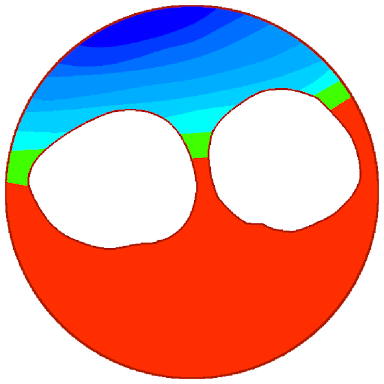

Sobre AureComay...
¿Quien es?

Pues, el es aure comay, una persona bastante amable... supogo.
Es lider del server de los randoms, burocrata de la letterballs wiki.
Trabajo en:
•
Los randoms server
•
Sobrevive a las Ñs
•
Mi canal de YT
•
Letterballs wiki
Musica que me gusta
One bounce - die of death ost
Classic pursuer - die of death ost
Smile made of hands - Enfosi ost
Capacidades:
z Html basico
• Css basico
• Junior javascript (pronto) (O sea en 2 años)
• Dibujante (De bolas)
Y eso es todo :D
↑ Volver a la pagina principal ↑